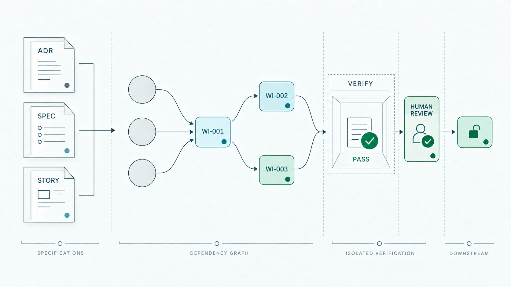

STAGE 01
PraxisBound
ADR 決策固化
所有非直觀的架構取捨與邊界約束，皆先沉澱為不可隨意反轉的架構決策紀錄（ADR），明訂成立邊界與失效條件，杜絕後續反覆推翻。
AI Agent 可以在幾秒內生成大量程式碼，也可以毫不費力地回報「我已經做完了」。ForgePilot 不相信任何缺乏證據的宣稱。
它不是儀表板，也不介入寫程式的過程。它唯一的職責，是在驗證證據不足、工作樹髒污、或是關鍵人工決策尚未落地時，明確無誤地在原地擋下推進，讓軟體工程重拾可追溯的重量。
在人類寫程式的時代，完成工作的阻力來自撰寫過程；而在 Agent 時代，最大的系統性風險在於「宣告做完」不需要承擔任何成本。
當你把工程委託給 AI Agent，它通常同時掌握過多的權力：自己決定挑哪一題、自己在工作目錄修改代碼、最後自己宣布測試通過。只要其中一環出現幻覺或遺漏，你往往要等到合併或上線後才會發現災難。
ForgePilot 的核心治理命令與 state 不依賴網路、也不架設遠端資料庫；Runner 所啟動的本機 coding CLI 則可能依其自身設定連線。一切治理事實以具備程序鎖保護的狀態檔落地保存。不留模糊空間，沒有任何僥倖。
這不是空泛的 dashboard，而是真實的狀態機門檻。少了任何一項事實證據，系統明確拒絕推進。
這不是理論推導，而是我們在多輪 Dogfood 開發中真實驗證並落地的工程機制。前置規格由 PraxisBound 完整定稿，ForgePilot 接手將其構建為嚴密的可執行依賴圖（DAG），透過隔離驗證、Evidence 與明確 Human Review 邊界維持可追溯的推進順序。
所有非直觀的架構取捨與邊界約束，皆先沉澱為不可隨意反轉的架構決策紀錄（ADR），明訂成立邊界與失效條件，杜絕後續反覆推翻。
將宏觀目標細化為具備唯一職責的規格文檔與 Story，附帶完備的 Acceptance Criteria (AC) 與不可妥協的測試契約，定義「何謂正確」。
ForgePilot 接手以 work add --depends-on 構建嚴密的有向無環圖。前置未滿足者為 PENDING，解鎖後推進為 READY，排除所有循環與死鎖。
Agent 只做指定 focused checks；ForgePilot 對 immutable Candidate 執行 canonical verification。預設 WORK_ITEM policy 須經 Human Review 才解鎖下游；GOAL policy 以 VERIFIED 推進依賴，並在整個 Goal 通過驗證後自動完成。

圖示為預設 WORK_ITEM policy：PASS 不會直接解鎖下游；Human review approve 使 Work Item 成為 DONE。GOAL policy 則以 VERIFIED 推進依賴，並在整個 Goal 的 current verification 條件成立後自動完成。
每個節點被認領後，由 Agent 在全新 Session 中專注實作該 Story 的 AC，並只執行交接指定的 focused checks。完成後由 ForgePilot 在 Candidate 的隔離 checkout 執行 canonical make verify，才取得客觀 PASS Evidence。
驗證失敗才在明確的 Attempt 預算內進入 Repair 迴圈。預設 WORK_ITEM policy 的 PASS 先等 Human Review，只有 DONE 才推進下游；GOAL policy 的 VERIFIED 可推進依賴，全部 current verification 通過且沒有 OPEN Gate 時自動完成 Goal。一旦超出預算或遇到架構決策立即停下，絕不無界浪費資源。
Agent 永遠不需要猜測「下一步做什麼」。ForgePilot 根據 Graph 拓撲與狀態機即時給出唯一合法的 next 行動，有條不紊地驅動任務鏈，直到所有目標達成。
工具只管理它擁有的邊界，把不該猜的決策留給真正負責的人。
驗證結果永遠綁定在具體的 Candidate Revision。代碼有任何未提交變更，舊的 PASS 絕不替新內容背書。
Gate 讓關鍵設計分歧有名字、有選項，明確暫停下一步工作。只要問題懸而未決，下游一律凍結。
Story 的規格屬於 PraxisBound，代碼質量屬於 Repository；ForgePilot 僅專注於驗證「現在能否推進」的事實。
入口頁說明立場；長篇導覽則把狀態機、隔離驗證與不能妥協的設計邊界完整攤開。
正式導入從一個固定的 Source Revision 開始。Agent 先檢查並展示影響，取得授權後才建置並寫入受管理 Repository。
閱讀 onboarding 程序$ cd your-project
$ forgepilot init
Initialized ForgePilot in /your/project
$ forgepilot status
Next action is explicit.